Runas
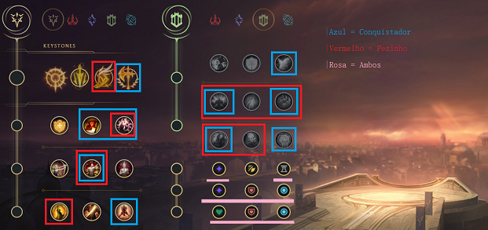
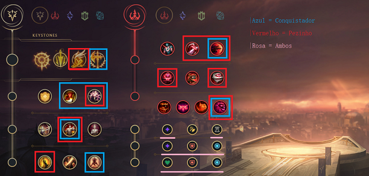
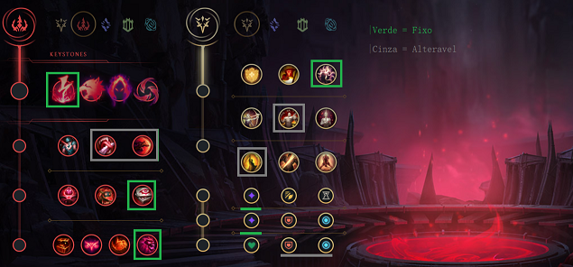
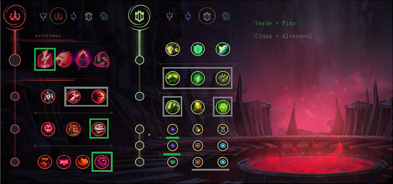
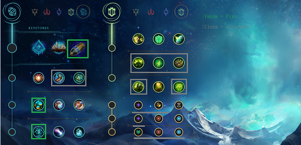
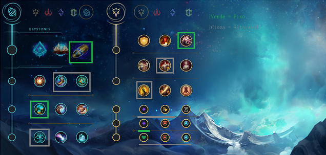
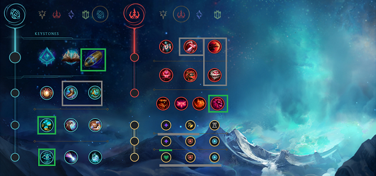
 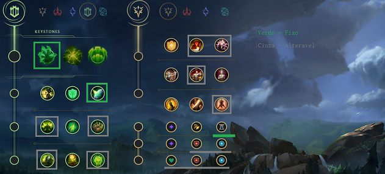
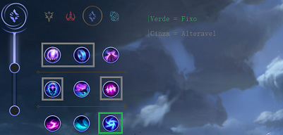
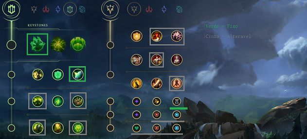
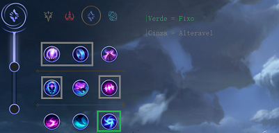
Árvore de Precisão
Conquistador
Conquistador: Talvez a runa mais
utilizada e a melhor nessa pré season e provavelmente na próxima temporada(13). A runa do
Conquistador pode ser usada quando se tem um time muito tank ou contra bonecos que buildem
bastante vida. Como as skills do Kassadin concedem 2 stacks do Conquistador, a runa consegue ser
muito viável na grande maioria das partidas nessa próxima season, graças aos novos itens e pela
durabilidade que todos os campeões do jogo possuem hoje em dia.
Fleet
Pezinho ou Fleet(chame como quiser):
Uma runa que eu particularmente amo usar nas partidas, mas infelizmente está muito nerfada e poucos
Kassadin players usam hoje em dia. A runa de Fleet funciona basicamente para lhe garantir um sustain
na sua lane phase contra campeões q te dão muito poke ou caso vc queira só ficar safe na lane, mesmo
se vc não se garantir com o campeão. Eu indico essa escolha de runa pra aqueles players de Kassadin
inexperientes que não tem mt noção de resistência e dano do personagem, e como sobreviver na lane
phase mais ou menos até o nível 11.
Sub-Runas
As sub-runas do Kassadin dependem muito do seu estilo de jogo ou talvez
até do conhecimento sobre o boneco, vou mostrar mais abaixo para que serve a escolha de runa de cada
uma.
- Presença de Espirito: Sem dúvidas, a melhor escolha de sub
runas
para o campeão, caso você vá usar a árvore de precisão.
- Tenacidade: Única runa viável entre as outras 3 da árvore
do meio,
sem discussão.
- Golpe de Misericórdia/Até a morte: A escolha entre ambas é
de que
uma serve para uma matchup ou até mesmo jogo em que vc tenha q se arriscar muito e ficar
muito
exposto ao time inimigo para concluir o seu papel de assassino. Já o Golpe de Misericórdia é
a
melhor escolha para quando você pode fazer o seu papel de assassino tranquilamente durante
as
TeamFights, ou até mesmo quando você está em uma lane phase relativamente tranquila, com
muita
facilidade de ganhar do seu oponente em um 1v1.
Secundárias
As secundárias do Kassadin podem ser decididas de acordo com qual você
acha a melhor para o suposto jogo ou caso queira jogar apenas para ganhar a lane phase.
Determinação
- Golpe de Escudo: Boa em situações onde
você está com conquistador e contra um time full AP e tem a necessidade do UP no Q de
second.
- Condicionamento: Boa quando vc vai ficar um pouco mais
"tank" no
jogo ou seja, buildando frozen heart ou até mesmo uma banshee/mascara abyssal.
- Ventos Revigorantes: Boa quando você está contra um boneco
de muito
poke na lane ou lute contra o oponente e não tome 100-0.
- Osso Revestido: Boa quando você está contra um boneco que
pode te
dar 100-0 em algum momento da lane phase,como por exemplo Zed ou Talon.
- Crescimento excessivo: Boa quando o time inimigo não tem
muito
Controle de Grupo e não precise de mais tenacidade além da própria sub-runa de tenacidade.
- Inabalável: Boa quando o time inimigo possui muito Controle
de Grupo
e a sub-runa da Tenacidade não dê conta sozinha, como por exemplo, onde tenha uma Ashe e
Morgana na
mesma partida.
- Revitalizar: Não é uma runa muito boa, mas é
viável de vez em nunca,
somente quando estiver com Fleet e dando max Q de second.
Dominação
- Impacto Repentino: Uma das melhores seconds para o Kassadin,
graças ao
proc da runa no R do campeão.
- Gosto de Sangue: Boa quando estiver com Fleet e você queira um
pequeno
aumento em sua cura.
- Sentinela Zumbi: Vc quase nunca vai ver alguém usando essa
runa, mas
caso vc seja uma pessoa que warda muito e queira jogar o mais safe possível, essa é uma runa
até que
viável, graças ao poder de habilidade em q ela vai te dar quando um inimigo quebrar ela.
- Glóbulos Oculares: Consideravelmente usada, já que você de
Kassadin
sempre vai usar a lente vermelha, sempre em que quebrar uma ward vai ganhar poder de
habilidade
adicional.
- Caça Suprema: Melhor runa da pagina de dominação pro Kassadin,
sempre
em que você usar a árvore de dominação, você tem que usar Caça Suprema, graças a ajuda na
diminuição
do CDR da sua ultimate.
Árvore de Dominação
- Eletrocutar: A única e melhor escolha para o Kassadin dessa
árvore,
graças ao burst que a runa te dá, tanto early quanto no mid/late game. Facilmente utilizável
contra
match-ups em que você exploda o seu oponente tanto no 1v1 quanto em TeamFights.
- Gosto de Sangue: Boa quando você quer ter um pouco de cura no
1v1
contra o seu oponente.
- Impacto Repentino: Mt boa quando você tem Eletrocutar e já vem
buildando mt burst focado num inimigo e queira explodir ele mais do que já vai.
Árvore de Inspiração
- First Strike: Runa boa, usada pensando em adiantar
tanto o
seu spike quando o seu dano late game, já que o dano verdadeiro da runa consegue ser mais
efetivo no
late game do q o proc do eletrocutar.
- Calçados Mágicos: Boa quando você não quer se
preocupar em
gastar seu dinheiro com bota cedo no game.
- Cronômetro Perfeitamente Calculado: Boa quando você
quer
adiantar mais ainda o seu spike, assim ajudando na compra da Zhonyas logo após a compra do
Bastão
das Eras ou Luden/Coroa.
- Mercado do Futuro: Única viável entre as outras 2 e
é
maravilhosa pra adiantar o seu spike, junto do gold do First Strike.
- Perspicácia Cósmica: Única viável entre as outras 2,
e é mt
boa para tanto seu flash quanto sua second spell terem um cooldown baixo.
Builds
- Lacre Negro:Não recomendo começar de lacre negro caso não saiba o básico do campeão, mas caso esteja de eletrocutar ou First Strike é muito
bom para aumentar seu dano.
- Doran's Shield: Muito bom para quem quer ficar safe na lane e não tomar all win do inimigo.
-
-Doran's Ring: Boa pra quem gasta mt mana farmando e queira um pouco a mais de dano na trocação.
-Magic pen: Obrigatoriamente fzr ela qnd tiver buildando coroa e gelinho se n vc fica sem dano mas
se quiser fzr com ROA tbm pode.
-Bota de CDR: Muito boa caso vc esteja fznd Ludens, pq graças a magic pen q a luden da vc n precisa
ficar buildando mais magic pen.
-Botas de Resist: Boa pra qnd tem ou um time full AD ou um time full AP.
-Ludens: Caso vc queira dar um dano explosivo estando de eletrocutar.
-Gelinho: Só boiola faz gelinho item mt merda mas ainda da pra fzr se quiser, depende do seu game
style.
-Coroa: Mt bom pra caso esteja contra mts bonecos q te dão all win no jogo como por exemplo rengar,
talon, zed entre outros.
-Bastão das Eras: Simplesmente o melhor mitico atualmente pro KASSADIN pode fzr td game se quiser q
é sucesso👍
-Manamune: Bom pra qnd tem mt dano AP no seu time alem de vc.
-Seraph: Mt bom pra qnd vc é o unico ou um dos poucos dano AP do seu time.
Esses são os itens viaveis pro kassadin hj em dia, n tem mt o pq eu explicar cada um mas vou
explicar 2 aki.
-Banshee: Caso tenha mt dano ap no time inimigo e tem chances de vc levar pick-off antes das fights.
-Impeto Cosmico: Bom pra qnd vc ta buildando ludens e quer mais CDR do q ja vai ter.
Ambos os 3 itens acima tão uma merda pode jogar fora nem tenta fzr ai q vai dar merda.
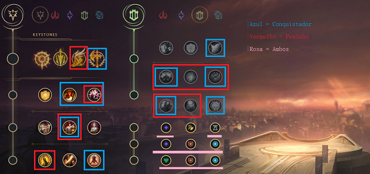
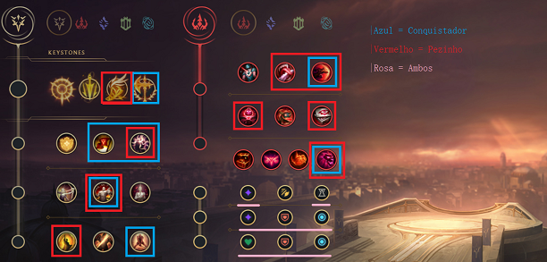
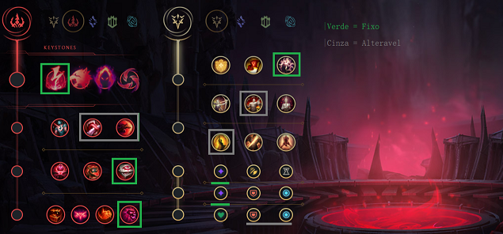
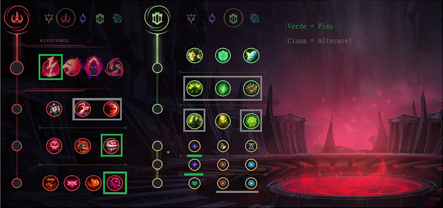
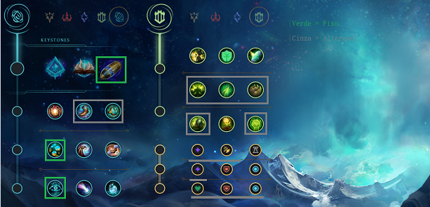
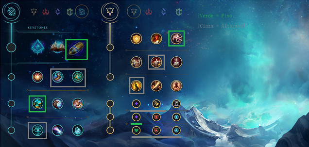
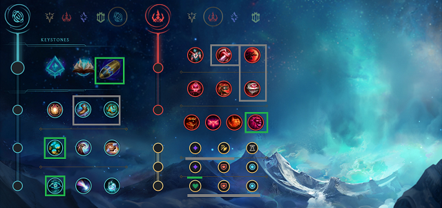
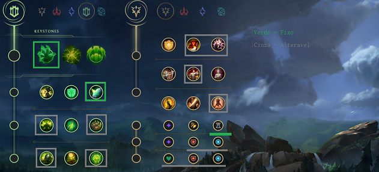
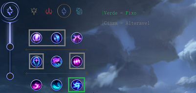